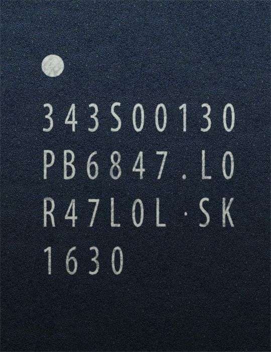
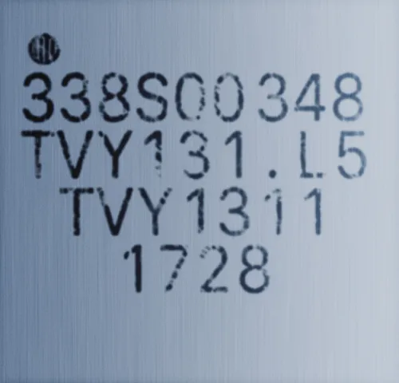

Apple W series
W시리즈 칩은 Apple의 음향 기기, Apple Watch 등 소형 디바이스의 원활한 연결을 위한 통신, 오디오 처리 등의 기능을 담은 칩이다. 사실 AP보다는 마이크로컨트롤러에 가까운 SOC이다.
Apple W1

CPU: ARM 호환 아키텍처
생산공정: -
주요 사용기기: Airpods, Beats Studio3 Wireless, Beats Solo3 Wireless, PowerBeats 3, Beats X, Beats Flex
Apple의 AirPods, Beats의 PowerBeats 3와 Beats X 등의 제품에 탑재된 칩셋이다. 이는 블루투스 4.2를 지원한다.
Apple은 이 칩이 고음질의 음원을 지원하면서 블루투스 사용 상태를 효율적으로 관리하여 배터리를 오래 쓸 수 있게끔 하며, 자동으로 사용설정을 해줄 수 있다고 주장한다. 실제로 AirPods의 유닛의 무게와 크기에 비해 긴 배터리 타임을 가지고 있다.
2019년 경 복제당하는 바람에 짝퉁 AirPods -일명 '차이팟'으로 흔히 부르는- 도 정품인증이 되는 사태가 발생했다.
Apple W2

CPU: ARM 호환 아키텍처
생산공정: -
주요 사용기기: Apple Watch Series 3
W1칩의 후속작으로, Apple Watch Series 3에 탑재된 통신 관련 칩셋이다. 블루투스 4.2를 지원하지만, 블루투스 5.0버전은 지원하지 않는다.
Apple에 따르면, Apple W2에 의해 Apple Watch의 Wi-Fi속도가 85% 더 빨라졌으며, 블루투스 및 Wi-Fi속도를 사용할 때 소모되는 배터리 역시 50% 더 줄어들어 더욱 효율적으로 변했고, 이 덕분에 이전과 동일한 배터리 용량으로도 하루 종일 사용할 수 있게 되었다고 한다.
Apple W3
CPU: ARM 호환 아키텍처
생산공정: -
주요 사용기기: Apple Watch Series 4, Apple Watch Series 5, Apple Watch Series SE, Apple Watch Series 6, Apple Watch Series 7, Apple Watch Series SE(Gen_2),
Apple Watch Series 8, Apple Watch Series Ultra, Apple Watch Series 9, Apple Watch Series Ultra 2
Apple W1, W2의 후속작으로, Apple Watch Series 4에 새로 탑재된 통신 관련 칩셋이다. Apple W2는 블루투스 4.2까지 지원했지만, W3부터는 블루투스 5.0도 지원하도록 개선되었다.